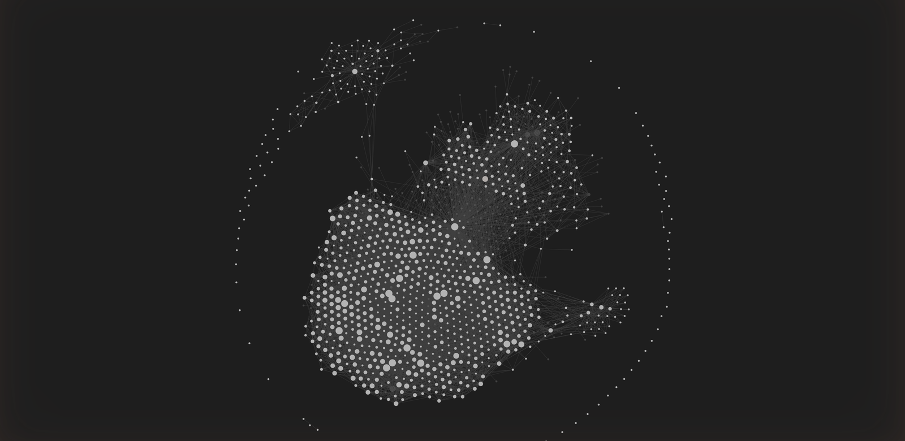

Clients & Brands
Performance Marketing & AI Workflows
Performance marketer managing £50M+ in paid media across international markets. I help businesses scale acquisition across B2B, B2C and eCommerce funnels through paid media, optimisation, experimentation, conversion tracking and practical AI-assisted workflows.
Performance marketing specialist with 11 years' experience growing B2B, B2C and eCommerce acquisition across paid media, SEO, affiliates and app campaigns. I currently manage £50M+ annual paid media investment across Google, Microsoft, Meta, LinkedIn and Apple Search Ads, spanning 8 international markets.
My work sits across strategy and execution: campaign architecture, bidding models, creative testing, conversion tracking, funnel optimisation and commercial reporting. I'm Google Ads and Apple Ads certified, and a former founder - I built a self-funded designer marketplace from zero to £1M/year.
Alongside campaign management, I build practical marketing automation and AI workflows using Claude API and Python, including reporting pipelines, audit tools and workflows that reduce manual analysis time and help turn performance data into clear actions.
Clients & Brands
Selected Work
Led performance marketing across Angi's international home-services marketplaces, including MyBuilder UK, HomeStars Canada, Werkspot Netherlands and Instapro US, with wider support across European markets. Managed £50M+ annual paid media investment across B2B contractor and B2C homeowner acquisition funnels.
Built geo-bucketed tCPA models using demand, margin and conversion data, improving B2C margin by 16.2%. On the B2B side, developed multi-stage acquisition funnels that reduced CPA by 30% YoY while growing volume.
Also led structured experimentation across ad copy, bidding and campaign architecture, including RSA headline testing across 6 markets, Apple Search Ads optimisation, and new market launches including Boston.
Founded and scaled a self-funded omni-channel fashion marketplace, combining ecommerce with physical retail in Covent Garden and Boxpark Shoreditch. Built the business across multiple revenue streams: B2C product sales, B2B seller subscriptions, transaction fees and paid retail placement.
Grew the partner network to 260 independent brands across 40 countries using designer scouting, HubSpot CRM, email nurturing and seller upsell journeys. Managed up to £25k/month in paid media across Google Search, Shopping, Display, Facebook and Instagram, including product feed management across a 250k+ SKU catalogue.
Hired and led an 11-person team across retail, fulfilment, marketing and ecommerce operations.
Full-service digital marketing for a premium Hatton Garden jewellery brand, retained for 4+ years. Built the Shopify website, Google Ads account and SEO presence from scratch, then scaled acquisition across Search, Shopping, PMax and organic search.
Grew ROAS from 2.72× in 2022 to 4.85× in 2025, with a peak month of 8.85× ROAS in December 2024. Managed campaigns across a 5,000-SKU catalogue, covering product feed optimisation, keyword research, ad copy testing and landing page improvements.
Built organic visibility from zero, achieving top 5 rankings for commercial non-brand terms including cherry blossom rings, ladybird jewellery, book necklaces, tie pins and lapel pins.
Took over a self-built Google Ads and tracking setup for a serviced office and meeting room provider where conversion tracking was unreliable, broad match was wasting spend, and campaign structure was limiting control.
Rebuilt the measurement foundation from scratch, including GTM container architecture, GA4 configuration, Consent Mode v2, Enhanced Conversions with form email capture, and cross-domain tracking across two domains.
Restructured Google Ads activity around cleaner intent groups, tighter keyword control and lead-form conversions, while improving landing page relevance and conversion focus so paid traffic had a better chance of turning into enquiries.
Replaced flat national CPA targets with location-based bidding tiers built from trade demand, conversion rate and margin data. This allowed high-value areas to be pushed more aggressively while lower-value areas were managed more conservatively. Delivered a 12% cost reduction, 16.2% margin improvement and 19% growth in high-value location conversions across B2C homeowner acquisition.
Built a 1,300-row RSA headline library and grouped assets by message type, including question-led, location-led, CTA, price-led and keyword insertion headlines. Used Z-test validation to separate headlines that drove clicks from headlines that drove conversions, then applied the learnings across six markets in five languages. Also completed a policy compliance review, identifying 25+ risky terms and approved alternatives.
Built a framework to measure AI Max's true contribution beyond Google's blended platform reporting. Tested performance across the UK, Germany, France and Netherlands to separate genuinely incremental conversions from existing keyword overlap.
The analysis showed that 74% of UK AI Max volume was already covered by existing keywords, while only 26% represented net-new incremental conversions. Post a Job landing pages generated around 75% of total UK AI Max margin, helping determine which campaigns to scale aggressively, which to limit, and where closer monitoring was needed.
Built a weighted six-stage contractor acquisition funnel from application start through to completed submission. Assigned value to each funnel stage based on its contribution to downstream conversion, then segmented campaigns into high, medium and low trade-value portfolios with separate tROAS bidding strategies.
This shifted optimisation away from raw lead volume and toward qualified acquisition behaviour, delivering ~30% CPA reduction alongside ~20% YoY volume growth.
Rebuilt the Apple Search Ads account around clear intent segments: brand, competitor, discovery and high-intent exact match campaigns. Created a keyword promotion workflow that moved proven search terms from broad discovery into exact match campaigns, reducing CPI from £2.09 to £0.52 while improving signal quality and campaign control.
Automates checks across GTM, Google Ads, GA4, Enhanced Conversions and Consent Mode v2, then produces a prioritised fix plan instead of a generic issue list. Built to catch tracking problems before they distort reporting or bidding signals.
Pulls Google Ads performance data, runs search term checks, highlights wasted spend and produces a weekly account deep-dive with clear action items. Reports are written into Obsidian, exported where needed, and pushed into Monday.com so analysis turns into follow-through.
Audits Merchant Center and Shopify product data, then proposes improvements to Shopping titles, product types, SEO titles and meta descriptions. The workflow keeps human review in place before anything is applied, so automation speeds up the work without blindly changing live accounts.
Every audit, report and performance check writes structured output into a persistent knowledge base. Each new cycle can reference previous findings, recurring issues, decisions made and results observed - so analysis compounds over time rather than starting from scratch.
The goal is simple: make performance workflows faster, more consistent and better informed every time they run.

Full-funnel acquisition planning across B2B, B2C and eCommerce. Channel mix, budget allocation, testing roadmaps and commercial targets built around growth, CPA, ROAS and margin.
Google Ads, Microsoft Ads, Apple Search Ads, Meta and LinkedIn - from account structure and bidding strategy to creative testing, scaling decisions and ongoing optimisation.
Google Shopping, Performance Max, Shopify, Merchant Center and product feed optimisation. Built for large catalogues, product-level visibility and profitable revenue growth.
GTM, GA4, Enhanced Conversions, Consent Mode v2 and cross-domain tracking. Measurement foundations that give bidding systems cleaner signals and teams clearer reporting.
Technical SEO, Shopify on-page optimisation, Search Console analysis, Core Web Vitals and structured data. Practical SEO focused on visibility, catalogue quality and commercial search demand.
Python and AI-assisted workflows that reduce manual analysis, flag issues early and turn performance data into clear next actions across Google Ads, Merchant Center, Shopify and tracking systems.
Practical automation tools built to reduce manual analysis, catch problems earlier and turn performance data into clear next actions.
"I'll be short and sweet: Lewis is an absolute legend to work with! He was on my team for four-plus years, leading performance delivery and execution for paid search, paid social, and display for our UK brand, MyBuilder.com. Passionate, driven, entrepreneurial, Lewis has a can-do attitude towards any curveball or complex project that comes his way. He's a fantastic team player who consistently delivered not only within his domain but also helped other teammates achieve their goals. He brings new ideas and shares his experience across the board. Without him, MyBuilder wouldn't be where it is today! Lewis also brings heart, humor, banter, and a good mood to any team meeting, workshop, retrospective, or anything else. He's an absolute joy to be around and work with. I can wholeheartedly recommend him for any performance marketing role - he would be a tremendous asset to any company. Thanks for the good times, Lewis!"
"Lewis has worked for me for 6 years now on helping me develop my e-commerce store in every way. He is very committed, hard working, results-focused, insightful and goes the extra mile. He's also very easy to work with and a nice guy to boot, which really helps make my life much easier as a small business owner. I highly recommend him."
"Lewis is incredibly strong from a professional point of view — he consistently delivered great work, supported the team whenever it was needed and really made a difference through his experience and reliability. At the same time he always managed to lighten the mood even in stressful situations. Working with him was not only easy but genuinely fun, and I really appreciate how supportive he has been. It made a big difference for me."
"Lewis was my Claude before Claude - as a colleague, if I ever had any SEM / SEO questions or needed help gathering data on the performance of my creatives, he would be my first stop. Not only would he always give me a detailed, accessible explanation of what is what, he helped me in crafting creative that would benefit the business. Now, with his own AI-powered techniques that he has picked up and taught - he is truly set to be one of the best in class at what he does. Every chance I got to work with Lewis was always informative and, thanks to his natural wit and humour, entertaining too."
Open to senior performance marketing, growth and paid acquisition roles, alongside selected consulting projects.
Get in touch